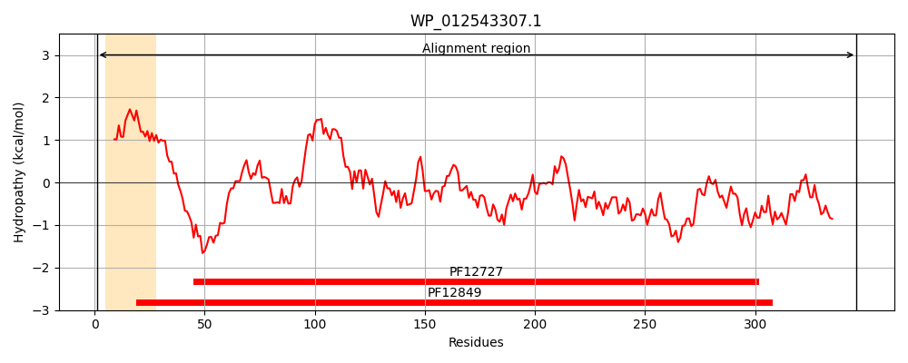
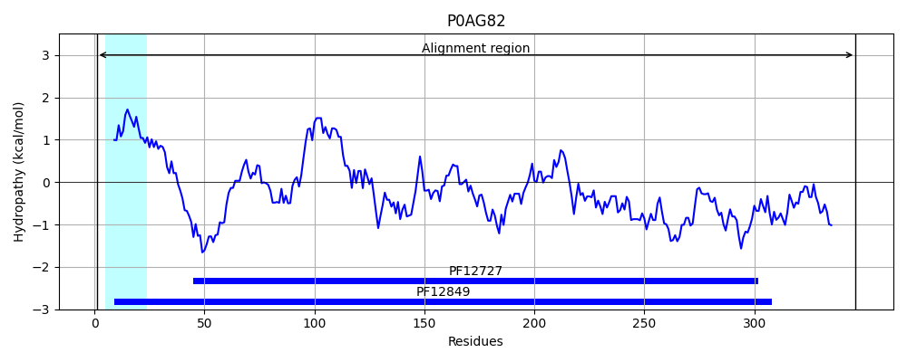
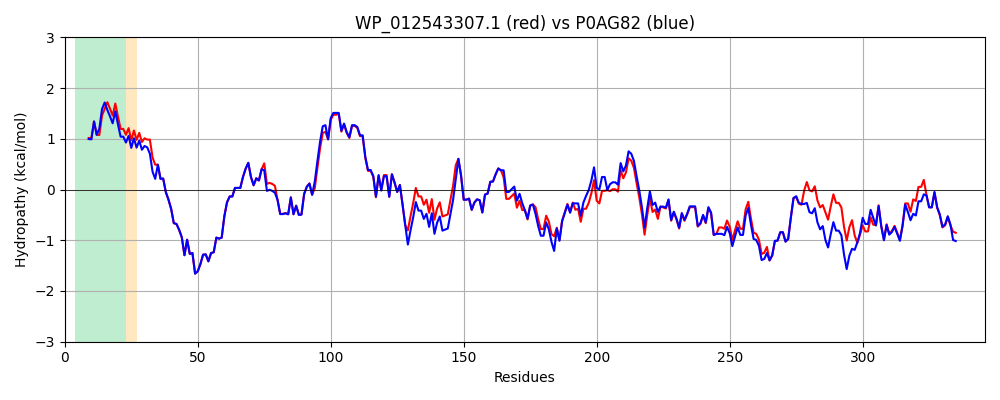

Hit Accession: P0AG82
Hit TCID: 3.A.1.7.1
Hit Description: gnl|BL_ORD_ID|8851 gnl|TC-DB|P0AG82|3.A.1.7.1 Phosphate-binding protein pstS - Escherichia coli.
Mach Len: 346
e:0.000000
Query TMS Count : 1
Hit TMS Count: 1
TMS-Overlap Score: 1.000000
Predicted Substrates:CHEBI:7793;phosphate(3-)
BLAST Alignment:
Score: 1634 , Bit scores: 634 bits, E-value: 0.0e+00, Alignment length: 346, Percentage identity: 90
Query: 1 MNVMRTTVATVVAATLSMSAFSAFAAASLTGAGATFPAPVYAKWADTYQKETGNKVNYQGIGSSGGVKQIIANTVDFGASDAPLADDKLTQEGLFQFPTVIGGVVLAVNLPGVKSGELVLDGKTLGDIYLGKIKKWDDAAIAKLNPGLKLPSQNIAVVRRADGSGTSFVFTSYLSKVNEEWKSKIGAGSTVNWPTGLGGKGNDGIAAFVQRLPGSIGYVEYAYAKQNNLAYTKLVSADGKPVSPTEDNFANAAKGVDWSKSFAQDLTNQKGENAWPITSTTFILVHKATNKPEQTAEVLKFFDWAYKNGGKEANALDYATLPESVVEQVRAAWKTNVKDSSGKALY 346
M VMRTTVATVVAATLSMSAFS FA ASLTGAGATFPAPVYAKWADTYQKETGNKVNYQGIGSSGGVKQIIANTVDFGASDAPL+D+KL QEGLFQFPTVIGGVVLAVN+PG+KSGELVLDGKTLGDIYLGKIKKWDD AIAKLNPGLKLPSQNIAVVRRADGSGTSFVFTSYL+KVNEEWK+ +G GSTV WP GLGGKGNDGIAAFVQRLPG+IGYVEYAYAKQNNLAYTKL+SADGKPVSPTE+NFANAAKG DWSK+FAQDLTNQKGE+AWPITSTTFIL+HK KPEQ EVLKFFDWAYK G K+AN LDYA+LP+SVVEQVRAAWKTN+KDSSGK LY
Sbjct: 1 MKVMRTTVATVVAATLSMSAFSVFAEASLTGAGATFPAPVYAKWADTYQKETGNKVNYQGIGSSGGVKQIIANTVDFGASDAPLSDEKLAQEGLFQFPTVIGGVVLAVNIPGLKSGELVLDGKTLGDIYLGKIKKWDDEAIAKLNPGLKLPSQNIAVVRRADGSGTSFVFTSYLAKVNEEWKNNVGTGSTVKWPIGLGGKGNDGIAAFVQRLPGAIGYVEYAYAKQNNLAYTKLISADGKPVSPTEENFANAAKGADWSKTFAQDLTNQKGEDAWPITSTTFILIHKDQKKPEQGTEVLKFFDWAYKTGAKQANDLDYASLPDSVVEQVRAAWKTNIKDSSGKPLY 346 | Protein Hydropathy Plots: |
|---|
|  |  |
Pairwise Alignment-Hydropathy Plot:
|
|---|
|  |